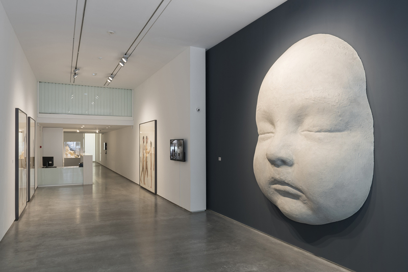

La Galería Marlborough es una de las galerías de arte más prestigiosas de España, con sede en Madrid, reconocida por su papel en la difusión del arte contemporáneo y moderno a nivel internacional.Nació en Londres en 1946 y posteriormente abrió sedes en Nueva York y Madrid. La sede madrileña se inauguró en 1992, convirtiéndose en un referente del arte contemporáneo en España.
